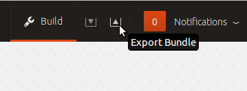

Creating and using Bundles
A bundle is a set of services with a specific configuration and their corresponding relations that can be deployed together via a single step. Instead of deploying a single service, they can be used to deploy an entire workload, with working relations and configuration. The use of bundles allows for easy repeatability and for sharing of complex, multi-service deployments.
Bundles are defined in text files, called “bundle files” or “deployer files”. Each file may contain one or more bundle definitions. For simplicity, the files generated as described below will only have one bundle.
Using bundles
A bundle file can be used in two distinct ways. One is to use it locally, deploying from your computer, which is useful to initially ensure it works and for experimenting. After you are satisfied with the bundle, you can push it to Launchpad where it will be available to you and others via the Charm Store. If you're looking to find bundles you can just search the store.
Local import to Juju GUI
The easiest way to import a bundle into the GUI is by dragging the bundle file from your desktop and dropping it on the GUI canvas. If the file has multiple bundles in it you’ll be prompted to select the single bundle you wish to deploy.
A second way to import into the GUI is via the Import button on the GUI masthead. After clicking the button you’ll be prompted to select the bundle file. Once a file is selected the process is the same as the drag-and-drop method.
Local deploy via command-line
A bundle file can be deployed via the command-line interface by using the juju quickstart tool. You should always check the bundle to make sure it is correct before deploying it:
juju bundle proof bundles.yaml # optional juju quickstart bundles.yaml
Creating a bundle
The standard way to create a bundle is via the Juju GUI. When a set of services are deployed and configured the bundle definition can be saved either by clicking on the export icon on the Juju GUI masthead or via the keyboard shortcut “shift-d”. This results in the creation of a file called “export.yaml” that is saved in your “Downloads” directory as defined by your browser.
As an example here is an environment with a MySQL service and a Wordpress service with a relation between the two. The exported bundle file contains the following data:
envExport:
services:
mysql:
charm: "cs:precise/mysql-27"
num_units: 1
annotations:
"gui-x": "139"
"gui-y": "168"
wordpress:
charm: "cs:precise/wordpress-20"
num_units: 1
annotations:
"gui-x": "481"
"gui-y": "178"
relations:
- - "wordpress:db"
- "mysql:db"
Naming your Bundle
By default the Juju GUI will name the bundle `envExport`. This is the first line in a bundle. The bundle must have a unique name. We recommend descriptive names for your bundle but nothing too long. `wordpress-simple`, `hadoop-cluster`, and `mongodb-sharded` are some examples of bundle names. Avoid CamelCase and periods for bundle names.
Sharing your Bundle with the Community
Bundles are shared by putting a branch onto Launchpad with specific naming which will then be pulled into the Charm Store. The branch must be constructed and named according to the following rules.
The branch name must structured as:
lp:~<your launchpad id>/charms/bundles/<your bundle name>/bundle
A concrete example would be:
lp:~bac/charms/bundles/wiki/bundle
Inside the Bazaar branch, the following files are expected:
. ├── bundles.yaml └── README.md
After you have created the bundles.yaml and readme, you need to proof the bundle to make sure it is valid. You can push them to your namespace, the Juju Charm store will automatically find your bundle and index it in the store. Ensure you are using your launchpad name and a unique bundle name:
Tip:You should review the configuration options for the charms you are planning to use in a bundle, some of them generate passwords for services or might need configuration as a separate step. This may or may not be desireable for users, so if there are any extra steps required document them in your README.md file.
juju bundle proof bundles.yaml bzr push lp:~yourusername/charms/bundles/yourbundlename/bundle
- Next file a bug against charms at https://launchpad.net/charms/+filebug. This is used to track the progress of your charm.
- Subscribe the charmers team by clicking "Subscribe someone else" on the right side of the launchpad page. This is important as it gets your charm in the review queue!
- Now you just need to attach your branch to the bug report, go to your code page, find your branch, and click on it. Then click on "Link a bug report", and put in the number of the bug you filed.
Someone will come along and review your bundle for inclusion. If you need to contact someone you there will be patch pilots in #juju who can help you get your bundle accepted. You can also contact us on the Juju mailing list.
Deploying a Bundle from the Charm Store with the GUI
To deploy a bundle from the Charm Store using the GUI, first find the bundle you wish to deploy via search or browsing the bundles to the left. To view bundle details, click on the bundle in the left sidebar; a pane will slide out containing the bundle details. You can then add the bundle to the canvas by clicking the button on the upper-right of the pane.
Alternatively, you can add the bundle to the canvas without expanding the detail pane by dragging the bundle onto the environment.
After the service is on the canvas it is in a ghost state. Now you can configure the service in the service inspector to the right of the screen and then click the "Deploy" button.